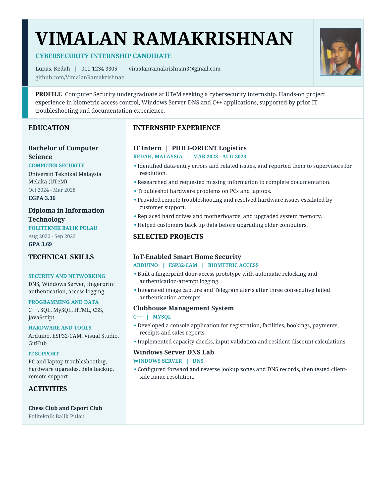

Career / Résumé
Experience, on paper.
A closer look at my education, technical skills and hands-on projects. Preview my résumé here or download a copy.

VIMALAN RAMAKRISHNANCYBERSECURITY / RÉSUMÉ
A closer look at my education, technical skills and hands-on projects. Preview my résumé here or download a copy.
